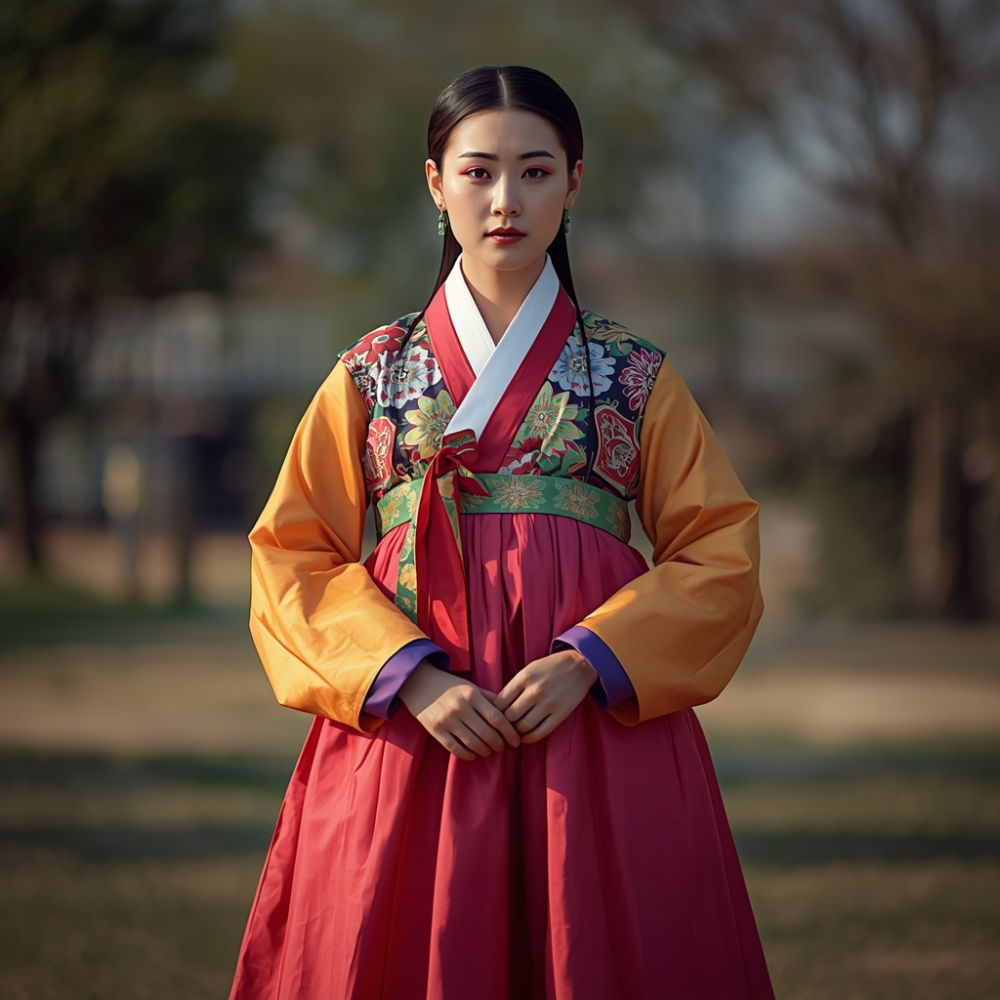

🧑🤝🧑 世界の民族・人びと
People of the World。国境を越えて暮らす人びとを、地域ごとに紹介します。伝統だけでなく、今の暮らしも一緒に。

朝鮮民族
🗣 使用言語
朝鮮語（韓国語）
👥 人口の目安
約8,000万人（朝鮮半島に約7,700万人、世界各地の同胞コミュニティを含む）
👘 伝統衣装
上衣「チョゴリ」と、女性はスカート状の「チマ」、男性はズボン状の「パジ」を組み合わせた民族衣装「韓服（ハンボク）」が伝統的な装い。かつては白い衣を日常的に着る習慣があり「白衣民族」とも呼ばれた。
🏠 住居
伝統家屋「韓屋（ハノク）」は日当たりの良い丘を背にして建てられることが多く、床下から暖める床暖房「オンドル」を備えているのが大きな特徴。
🍲 食文化
発酵させた漬物「キムチ」を中心に、米飯とさまざまな副菜（バンチャン）を組み合わせる食文化が発達しており、味噌（テンジャン）などの発酵調味料も広く用いられる。
🎵 音楽・踊り
語りと歌を組み合わせた伝統芸能「パンソリ」や、仮面をつけて演じる仮面劇「タルチュム」、打楽器を用いた「サムルノリ」などが代表的な伝統芸能。
🎉 行事・祭り
旧暦の正月「ソルラル」と秋の収穫感謝祭「チュソク（秋夕）」が二大年中行事で、家族が集まり先祖を敬う儀礼を行う。
🙏 信仰・価値観
歴史的にはシャーマニズム、仏教、儒教の影響を強く受けてきたが、現代では仏教やキリスト教、無宗教などさまざまな信仰・価値観が共存している。
📜 歴史
古代の古朝鮮に始まり、三国時代（高句麗・百済・新羅）を経て、高麗・朝鮮王朝と続く長い歴史の中で共通の言語と文化を育んできた。20世紀には日本による統治や第二次世界大戦後の分断を経験したが、言語・文化・歴史の多くを共有し続けている。
🏙 現代の暮らし
ソウルをはじめとする大都市での高度な都市生活が営まれる一方、Kポップやドラマなど「韓流」文化が世界的な人気を博し、現代の朝鮮民族の文化的発信力を大きく高めている。
🇯🇵 日本との関係
古代には漢字や仏教などの文化が朝鮮半島を経由して日本に伝わり、20世紀前半には多くの朝鮮人が日本へ移住した歴史があり、現在も特別永住者を含む在日コリアンのコミュニティが日本各地に存在する。近年は韓流ブームを通じた文化交流も非常に活発である。
🌍 関連する国


出典: https://en.wikipedia.org/wiki/Korean_culture(2026-09-01時点) / https://en.wikipedia.org/wiki/Hanbok(2026-09-01時点) / https://ja.wikipedia.org/wiki/在日韓国・朝鮮人(2026-09-01時点)